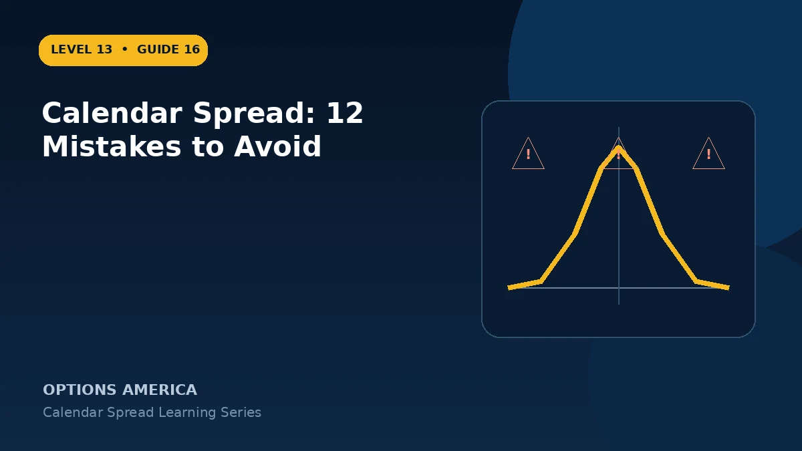

Avoid calendar spread errors involving expiration selection, IV term structure, target timing, assignment, execution and management.
Mistakes 1–3: weak thesis
Do not choose a strike without a timed target, assume sideways price guarantees profit or sell the nearest expiration by habit. The target must align with the front-expiration window.
Mistakes 4–6: volatility
Do not look only at headline IV, ignore term structure or assume positive vega means every IV rise helps. Model front and back expirations separately.
Mistakes 7–9: execution
Do not leg into the spread casually, ignore combined bid-ask width or overlook four-leg costs across entry and exit. Confirm option type, strike, dates and ratio.
Mistakes 10–12: management
Do not hold through front expiration without a plan, evaluate roll credit alone or forget assignment and dividend risk. Verify the final account position after every fill.
A practical example
A trader buys a calendar before earnings without noticing the event is priced only in the back month, then holds the ITM short call into expiration. Volatility and assignment risks were both misread.
This simplified example uses selected price, time and volatility assumptions; live results will differ. Live option prices also reflect the underlying price, time decay, rates, dividends, liquidity and transaction costs. Greeks are theoretical estimates, not guarantees.
Frequently asked questions
What is the biggest mistake?
Treating a calendar as guaranteed positive theta.
Why is the front expiration critical?
It changes the spread into a standalone long option if not managed.
Can correct price still lose?
Yes, if volatility or timing differs from the model.
Continue the Calendar Spreads cluster
Explore related guides: Calendar Spread Explained: Strategy, Risk and Reward · How to Choose a Calendar Spread Strike · Double Calendar Spread Explained. For a structured sequence, use the free Level 13 – Calendar Spreads course.
Options involve risk and are not suitable for every investor. This material is educational and is not investment, tax or legal advice. Greeks are theoretical estimates, and contract terms and broker requirements can vary.